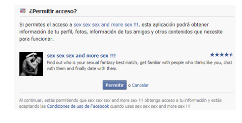
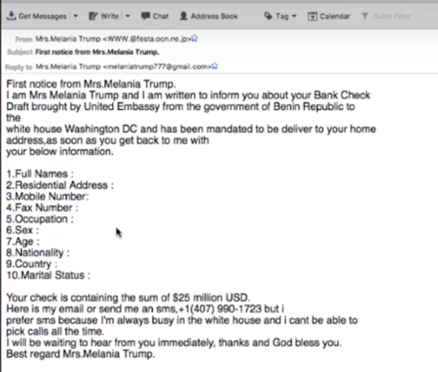
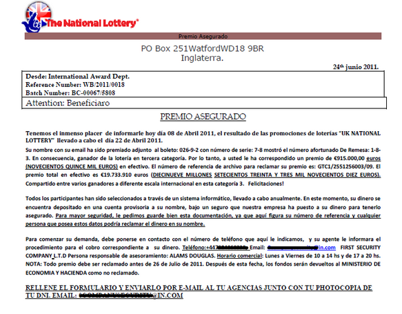
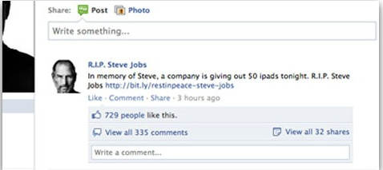

Factor humano
Mikel Egaña Aranguren
El factor humano
Al final, un sistema de seguridad es tan efectivo como lo es el más débil de sus eslabones.
En el caso de la seguridad online, el eslabón más débil es siempre el factor humano
Eugene Kaspersky
El factor humano
Usted puede tener la mejor tecnología, firewalls, sistemas de detección de ataques, dispositivos biométricos, etc. Lo único que se necesita es una llamada a un empleado desprevenido y acceden al sistema sin más.
Kevin Mitnick
El factor humano
Kevin Mitnick en los 90's fue considerado el Cybercriminal más buscado por el FBI
En uno de sus primeros ataques de ingeniería social explicaba cómo necesitaba un número de solicitante para "pinchar" el Departamento de Vehículos de Motor (DMV)
El factor humano
Para lograrlo llamó a una comisaría y se hizo pasar por alguien del DMV. "¿Su código de solicitante es el 36472?", a lo cual el agente contestó: "No, es el 62883"
Es un truco que he descubierto que funciona muy a menudo. Si pides información confidencial, la gente, sospecha de inmediato
El factor humano
Si finges que ya tienes esa información y dices algo que está mal, la gente suele corregirte y te recompensa con la información que estabas buscando
Ese principio básico de la ingeniería social se unía a otro esencial: la gente suele ser el eslabón más débil de una cadena de seguridad, porque "la gente siempre esa intención de ayudar"
El factor humano
Los usuarios también son parte del sistema
- También generan problemas de seguridad (Involuntarios o intencionados)
- Hay que tenerlos en cuenta en las políticas de seguridad
- Detrás del éxito de una gran parte de los ataques informáticos se encuentra un usuario “inocente”
El factor humano
¿Cómo son los ataques intencionados?
- El 75% de las empresas temen represalias de ex empleados
- Robo de información
- Sabotaje
El factor humano
¿Cómo se evitan los ataques intencionados?
- No siempre se puede, sobre todo a priori (¿Cómo distinguir si la intención es buena o mala?)
- Ante las dudas, auditorías
El factor humano
Las empresas deberían
- Evaluar los riesgos
- Evaluar su exposición a los mismos
- Preparar una respuesta por si se producen
El factor humano
A nivel preventivo
- Acceso limitado a los datos
- Medidas “extra” de seguridad para datos importantes
El factor humano
¿Cómo se aprovechan del factor humano los hackers/crackers?
- Desconocimiento / Ignorancia
- Dejadez / Pereza
- Curiosidad / Ganas de saber / Ganas de lucrarse
- Comunicación / Ganas de darse a conocer
- Miedo
- Vergüenza / Desprestigio
El factor humano
Desconocimiento / Ignorancia
- ¿Cómo se actualiza el sistema operativo?
- ¿Hay que actualizar las aplicaciones?
- Este mensaje de nueva versión de Java que aparece, ¿Qué hago?
- Mejor no toco nada no vaya a dejar de funcionar
- Total, ¿quién va a querer acceder a mi ordenador?
- ¿Necesitas mi password? Apunta, es ...
El factor humano
Dejadez / Pereza
El factor humano
Dejadez / Pereza
El factor humano
Dejadez / Pereza
- Cambiar el password cada 6 meses es muy pesado
- Memorizar un password seguro para cada aplicación es muy pesado
- Instalar 21 actualizaciones de Windows... uff! Con la prisa que tengo
El factor humano
Curiosidad / Ganas de saber / Ganas de lucrarse
- Mira la foto de la fiesta ...
- Han pillado a esta pareja en actitud cariñosa.. No te lo pierdas!!
- ¿Quieres un puesto de trabajo?
- Medicinas online
- Te ha tocado la lotería de Sudáfrica!!
- Tengo una herencia que no puedo cobrar, ¿lo haces tú y te llevas una comisión?
El factor humano
Comunicación / Ganas de darse a conocer: Típico en redes sociales
- Me voy de vacaciones!!
- Fotos, gustos, datos personales
- ¿Todos tus "amigos" / seguidores son amigos tuyos? ¿Les conoces personalmente? ¿Confías en ellos?
- ¿Quién tiene acceso a tu información?
El factor humano
Vergüenza / Desprestigio
- Las personas no denuncian por vergüenza
- Las empresas no denuncian por desprestigio
- Consecuencia: Los timadores siguen lucrándose
El factor humano
¿Cómo se aprovechan del factor humano los hackers/crackers? Ingeniería Social
- Obtener información confidencial a través de un usuario
- De manera pasiva (sin interactuar con él)
- A través de redes sociales
- Seguimientos
- Se engaña al usuario para que proporcione información (técnicas activas)
Ingeniería Social
La información obtenida de forma pasiva se puede utilizar para muchas cosas:
- Intentos de encontrar contraseñas: fechas/nombres significativos, aficiones, ...
- Para usarla luego en un ataque:
- Correo fraudulento del banco
- Conocimiento sobre el objetivo en general
Ingeniería Social. Técnicas
Scam:
- Estafa a través de correo electrónico o páginas web
- Puede haber pérdida económica o no
- Hoax, phishing, spam, pharming
Ingeniería Social. Técnicas
Hoax:
- Intento de hacer creer que algo falso es real
- No suelen tener consecuencias económicas
- Generan tráfico inútil y sobrecargan servidores
- Peligro: el cuento de Pedro y el lobo (Cuando algo sea real, el usuario no se lo creerá)
- Juegan con los miedos / buena intención de los usuarios
Ingeniería Social. Técnicas
Hoax (Prevención):
- Suelen ser anónimos y no citan fuentes
- Contienen una petición de reenvío
- Pensar con lógica
- No reenviar / publicar aquello que no estamos completamente seguros que es real . En caso de duda, INFORMARSE
Ingeniería Social. Técnicas
Phishing:
- Intento de lograr contraseñas o datos bancarios a través de un correo o una web que aparenta ser oficial
- Suele usarse en conjunto con el envío de SPAM
- El enlace muestra una cosa y redirige a otra
- URL muy parecida a la original: http://www.kutzabank.es/
- URL con mismo nombre, pero distinto dominio: http://www.bankia.bz/
Ingeniería Social. Técnicas
Técnicas de Phishing:
- Cross Site Scripting (inyectar código malicioso en la página real)
- IDN Spoofing (vulnerabilidad en nombres de dominio internacionales por el uso de Unicode). Los navegadores actualizados no son vulnerables
Ingeniería Social. Técnicas
Phishing:
- Los ataques suelen ser masivos
- Spear Phishing: Ataques dirigidos a objetivos concretos
Ingeniería Social. Técnicas
Aplicaciones de redes sociales

Ingeniería Social. Técnicas
Soluciones al Phishing:
- Nunca dar información confidencial por e-mail
- Teclear directamente la dirección, no pinchar un enlace
- Comprobar que la conexión esté cifrada (HTTPS)
- Comprobar los certificados
Ingeniería Social. Técnicas
Soluciones al Phishing:
- Usar versiones actualizadas de los navegadores
- Usar un antivirus que analice las webs que se visitan (https://www.virustotal.com/")
- Usar un servicio de análisis de URLs
Ingeniería Social. Técnicas
Timo nigeriano (estafa 419):
- Teclear directamente la dirección, no pinchar un enlace
- Se usa en conjunto con el SPAM
- Herencias, loterías, posibles parejas, ...
Ingeniería Social. Técnicas
Ejemplo variante timo nigeriano

Ingeniería Social. Técnicas
Ejemplo variante timo nigeriano

Ingeniería Social. Técnicas
Soluciones al timo nigeriano:
- Pensar antes de actuar
- Nadie regala dinero
- Si no se juega a la lotería, es imposible que toque
- No dar información confidencial a desconocidos
Ingeniería Social. Técnicas
Herencias

Ingeniería Social. Técnicas
Loterías

Ingeniería Social. Técnicas
Trabajo (Muchas veces ilegal)

Ingeniería Social. Técnicas
Regalos

Ingeniería Social. Técnicas
Para detectar SPAM, revisar la cabecera:
- From -- el remitente
- To -- El destinatario
- Subject -- El asunto del mail
- Date -- La fecha de envío
- Received -- Indica en cada línea por qué servidores ha pasado (en orden inverso) -- Se puede usar el Servicio Whois
DMARC
DMARC (Domain-based Message Authentication, Reporting & Conformance) es un estándar que autentica el dominio del remitente de correos electrónicos, para que tanto los remitentes como los destinatarios puedan verificar los mensajes entrantes
Se definen las medidas que deben aplicarse a los mensajes sospechosos que se reciban
Comprobaciones de DMARC:
- Los mensajes entrantes deben estar autenticados por SPF, DKIM o ambos
- El dominio autenticado debe concordar con el que figura en la dirección del encabezado "De:" del mensaje
DMARC
Comprobaciones de DMARC:
- Los mensajes entrantes deben estar autenticados por SPF, DKIM o ambos
- El dominio autenticado debe concordar con el que figura en la dirección del encabezado "De:" del mensaje
Spoofing de correo electrónico
- Spoofing (suplantación): cambiar el contenido de un mensaje, para que parezca que proviene de una fuente que no es la real
- Los spammers pueden enviar correos electrónicos de modo que parezca que proceden de tu dominio
DKIM (Domain Keys Identified MaiL)
- DKIM previene más fácilmente el spoofing en los mensajes salientes que se envíen desde tu dominio
- DKIM incluye una firma cifrada en el encabezado de todos los mensajes salientes: Los servidores de correo electrónico que los reciben descifran su encabezado mediante DKIM y verifican que no se haya modificado tras el envío
SPF (Sender Policy Framework)
- Protegerse frente a correos falsificados que parecen proceder de tu dominio
DMARC
Google, Facebook, Microsoft, etc. están bloqueando el phishing y
ataques de spam con DMARC

Ejemplo real Media Markt
Gmail lo clasifica como spam

Black list

Black list
SORBS(Spam and Open Relay Blocking System) proporciona acceso a la lista negra antispam
UCEPROTECTL2 (Unsolicited Commercial E-mail). Las listas negras (mala reputación) basadas en spam son aquellas que enumeran direcciones IP individuales o rangos completos, del que se han recibido spam. Por ejemplo, correo electrónico masivo no solicitado
Ingeniería Social. Pharming
Redireccionar el tráfico de una web legítima a otra falsa
- Atacando el servidor DNS
- Atacando el fichero hosts en local
Peligroso porque el usuario ha introducido correctamente la URL: El redireccionamiento es “invisible”. Prevención:
- Si el aspecto de la web es diferente, sospechar
- Comprobar certificados
Ingeniería Social
La única forma de luchar contra la Ingeniería Social
- Educación de los usuarios
- Implantación de políticas de seguridad que realmente se sigan
Cuanta más información nuestra tengan los timadores, más fácil será que nos engañen
Casos reales. El director general chulito
Auditoría de seguridad para una compañía
El director general alardea de su seguridad
El consultor descubre los donativos a instituciones de lucha contra el cáncer
Casos reales. El director general chulito
A través de Facebook se descubre el restaurante y el equipo deportivo favoritos del director general
Llama al director general haciéndose pasar por una de las asociaciones de lucha contra el cáncer con las que colabora habitualmente
A cambio de la donación entra en sorteos de cenas en su restaurante favorito y entradas para su equipo favorito
El director general accede a recibir más información por correo electrónico
Casos reales. El director general chulito
Para asegurarse que no va a haber problemas al abrir el fichero, se le pregunta al director qué versión de Adobe Reader usa
Se le envía un fichero .pdf con código malicioso para esa versión concreta
Se consigue acceso total al ordenador del director general y desde ahí a toda la empresa
Casos reales. El parque temático
Contratan a una consultora para analizar la seguridad de sus sistema de venta de entradas
El consultor llamó al parque temático haciéndose pasar por vendedor de software
Tras hablar un rato con los empleados obtuvo la información de qué versión de Adobe Reader se usaba en el parque
Casos reales. El parque temático
El consultor se presenta en el parque simulando una familia (con niños)
Pide acceso a un ordenador para poder imprimir las entradas que tiene en el correo electrónico
La empleada le permite el acceso (a pesar de tenerlo prohibido)
Casos reales. El parque temático
Al abrir el archivo .pdf con las entradas, se instala un software malicioso que permite controlar el ordenador
Desde ese ordenador se accede a los servidores de la empresa